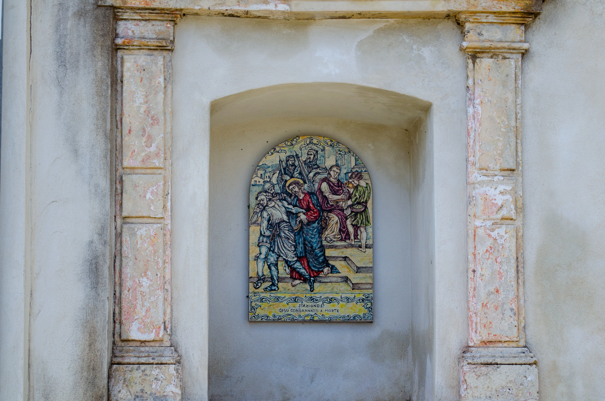
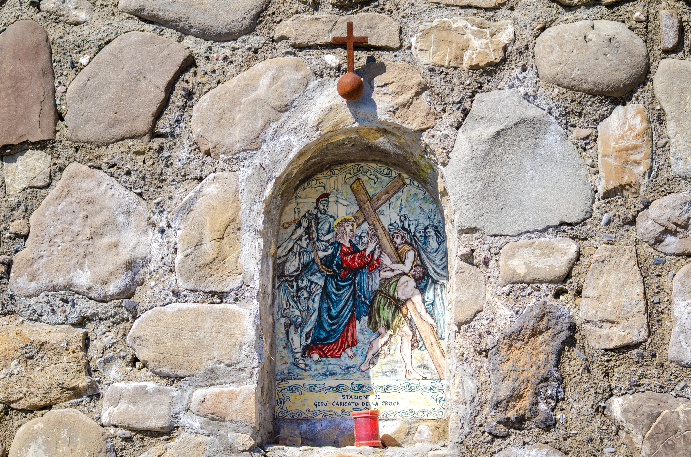
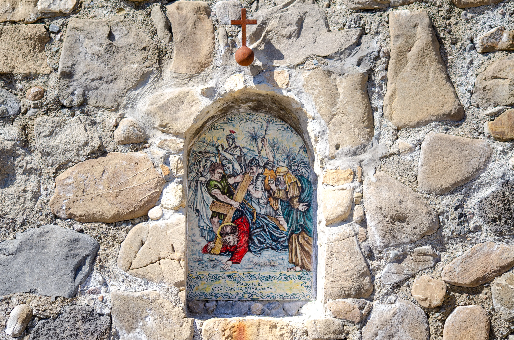
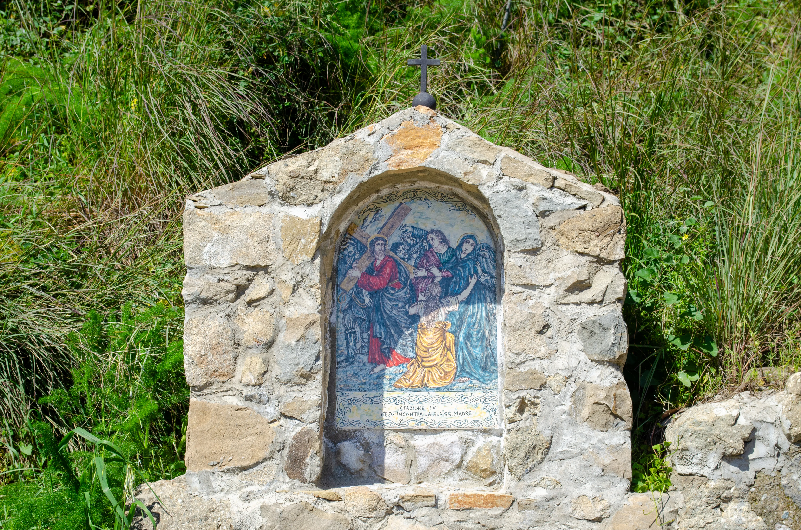
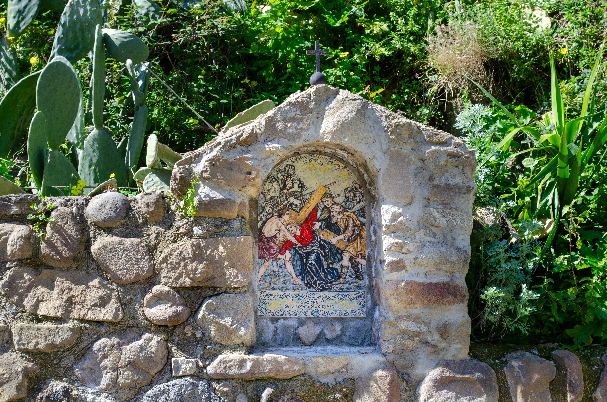
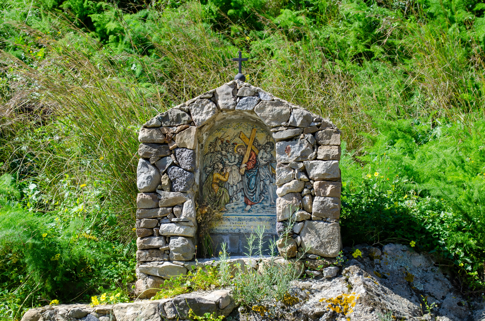
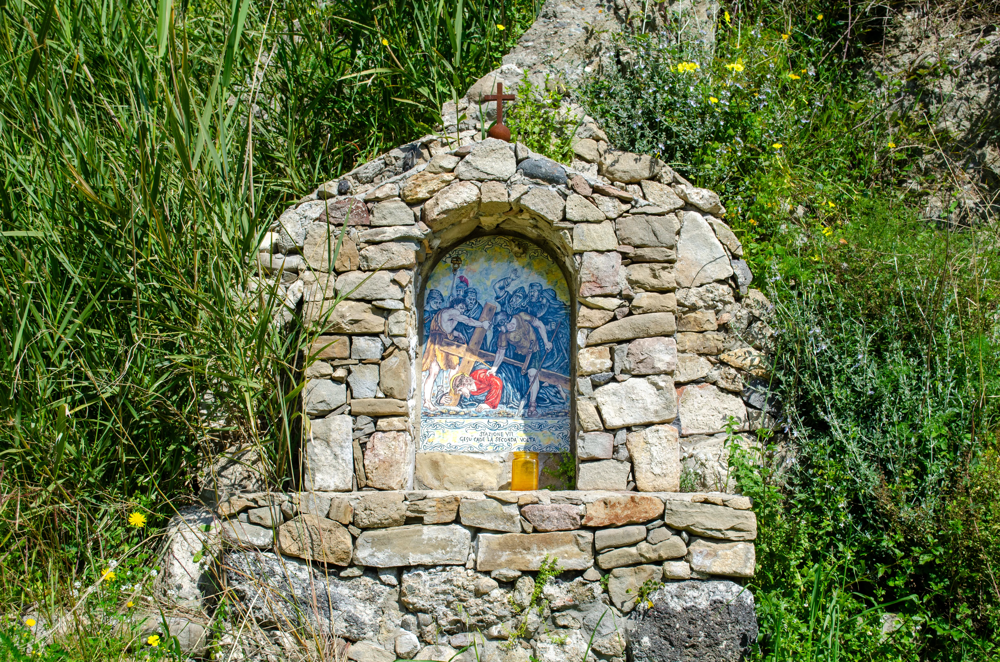
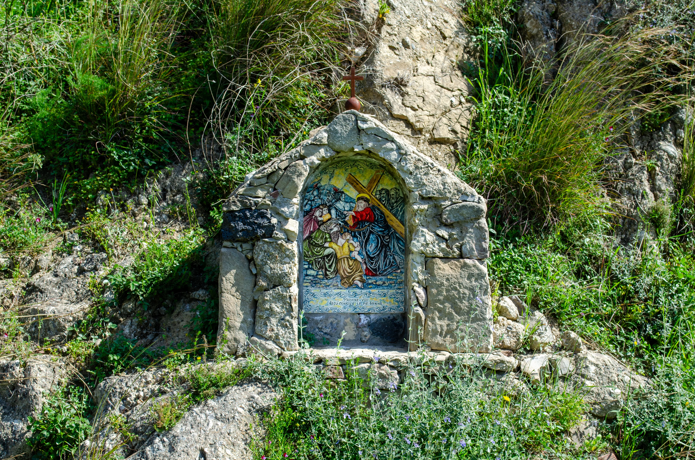
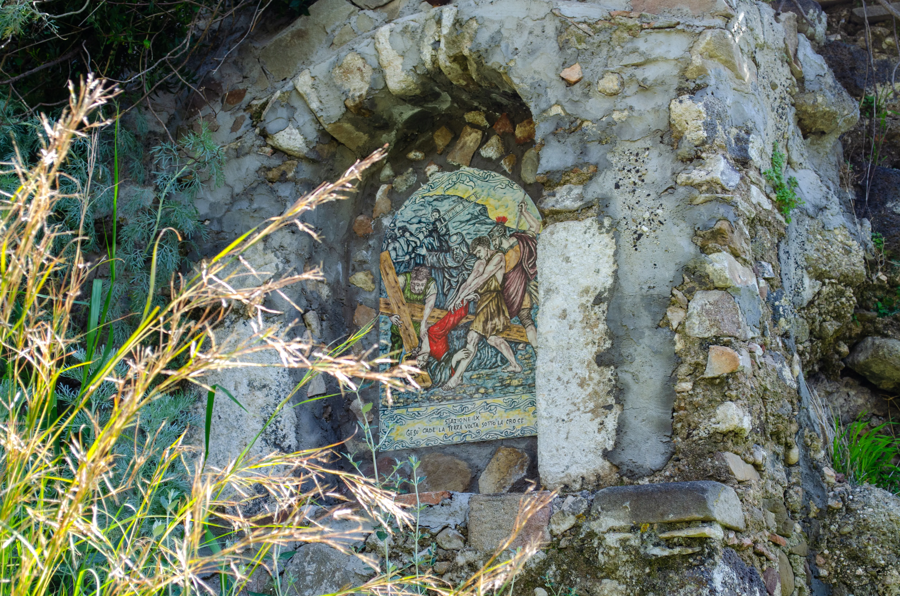
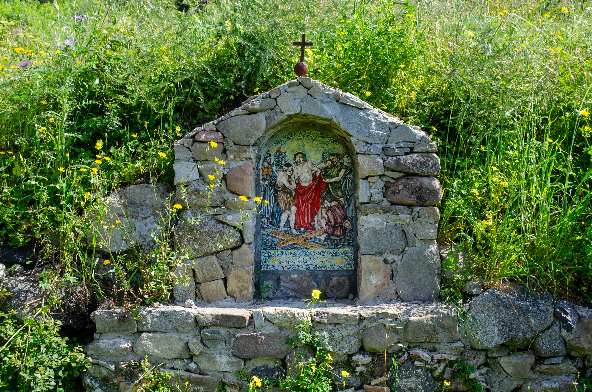
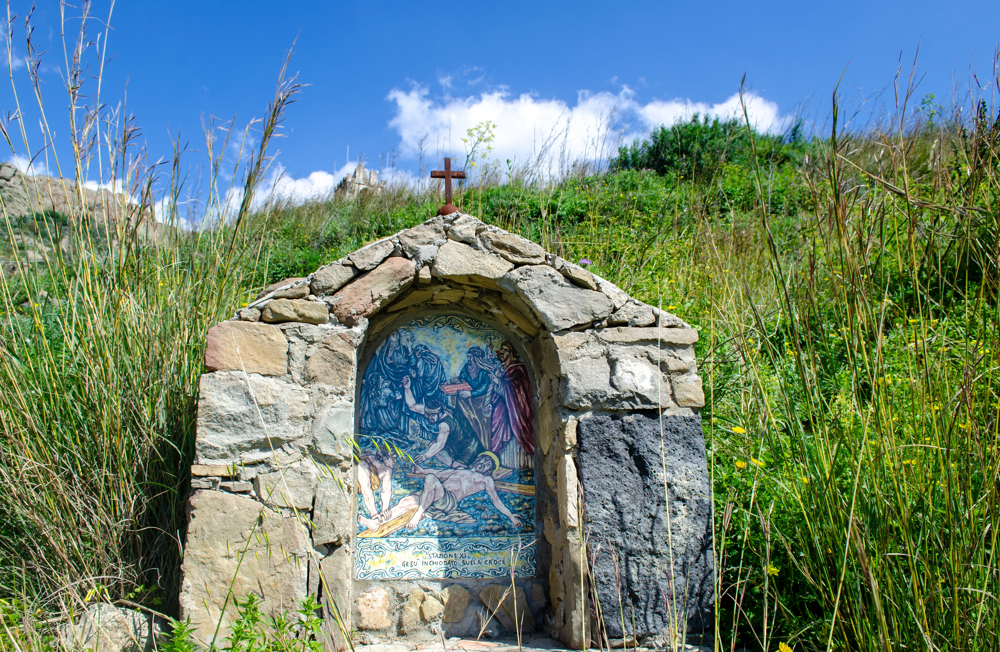
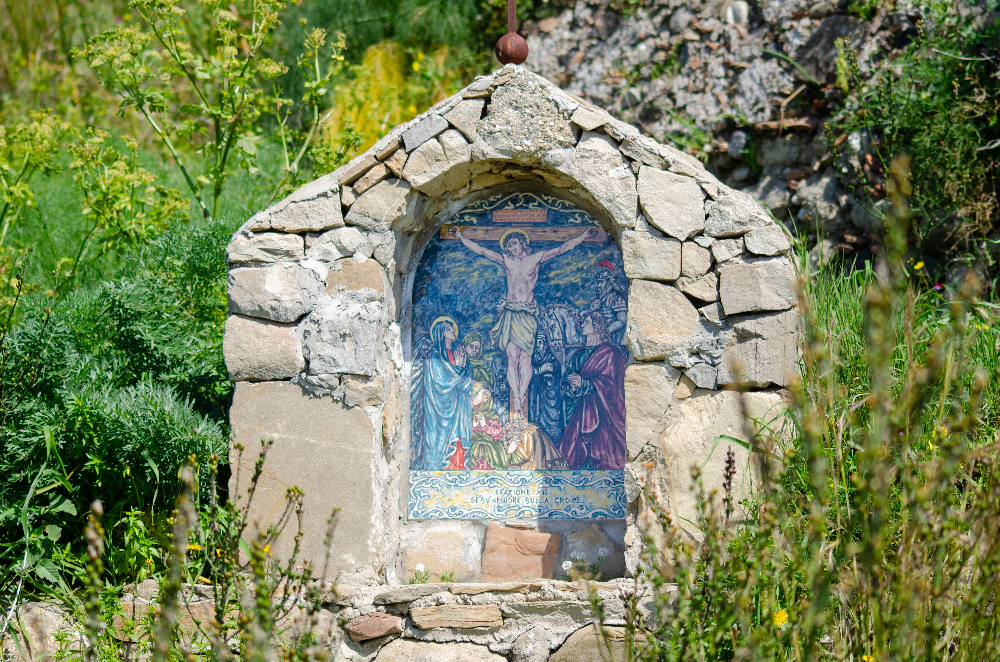
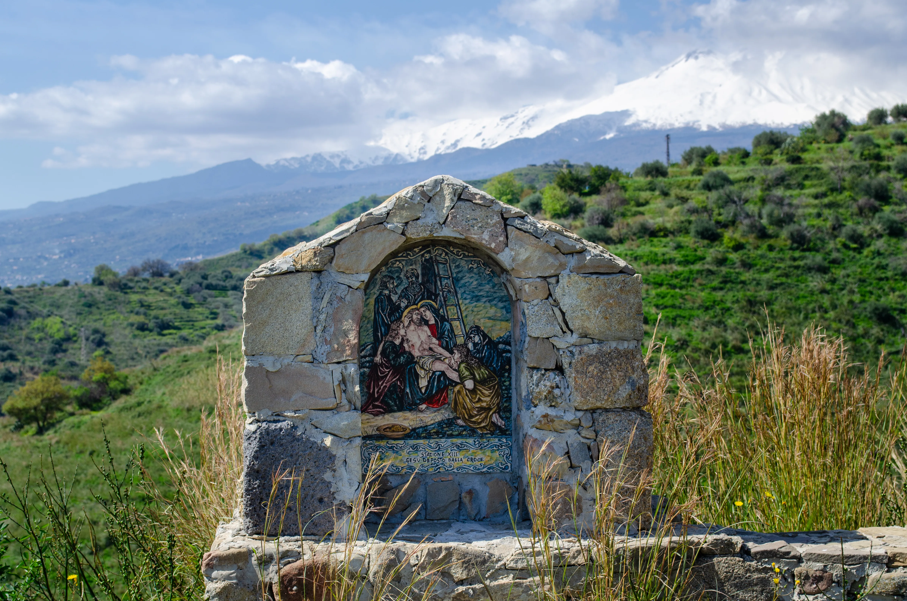
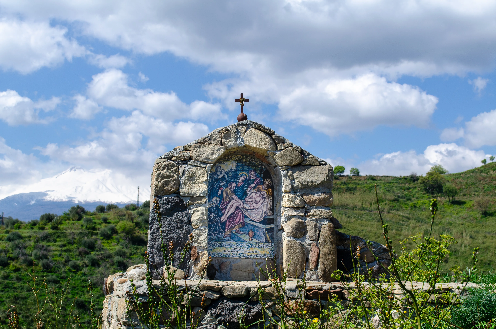
Percorso religioso che si svolge ogni anno durante la settimana santa, in cui i fedeli percorrono a piedi il sentiero che conduce al castello di Calatabiano, sostando in 14 tappe per commemorare le stazioni della Passione di Cristo. La Via Crucis è un momento di grande devozione e partecipazione popolare, che richiama numerosi visitatori e pellegrini da tutta la regione.
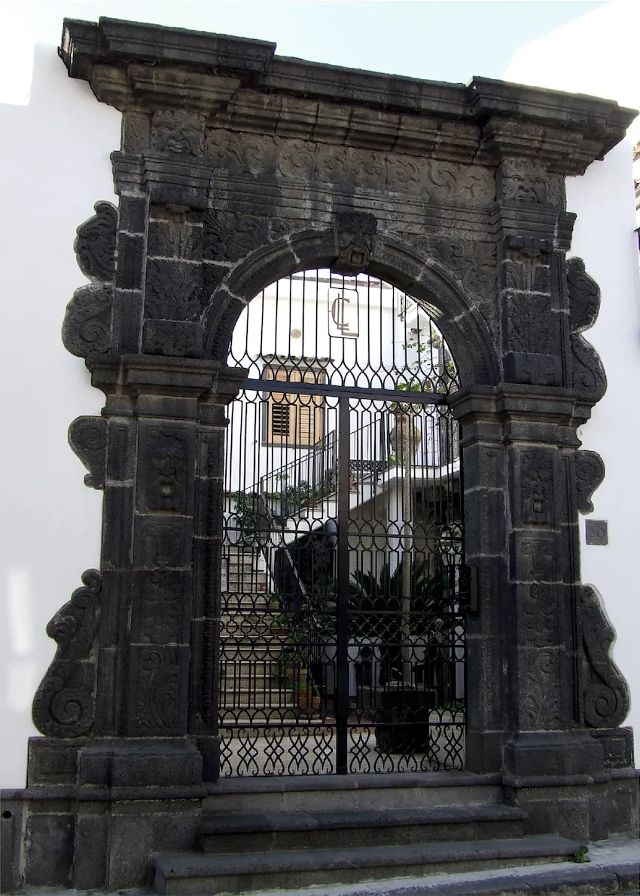
Alla famiglia Gravina si deve la costruzione, dopo il terremoto del 1693, del Palazzo Gravina, oggi di proprietà privata. È a pianta quadrata e si articola su due piani: quello inferiore, destinato probabilmente alla servitù, e quello superiore, alla residenza dei Principi. I due piani vengono scanditi da una cornice in pietra che corre lungo tutto il prospetto. L'ingresso principale è posto lateralmente ed al di fuori del prospetto edificato. Oltre ai due ingressi in pietra lavica, all'interno del cortile, pregevoli appaiono il bellissimo portale in pietra lavica e le mensole che sorreggono il balcone. I mascheroni in pietra, le inferriate e le sculture floreali che, secondo una interpretazione storica, servivano a scacciare le pestilenze molto diffuse in quell'epoca e tutte le altre sculture in pietra, come quelle del Castello San Marco, vengono attribuite ai maestri Flavetta. Altri bei esemplari di arte barocca si possono ammirare in alcuni balconi del centro cittadino, lungo la via XX Settembre e la via Cavour.